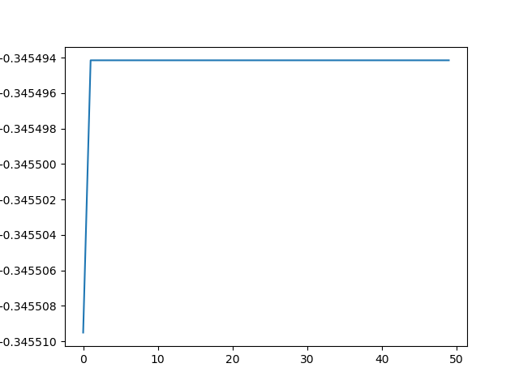
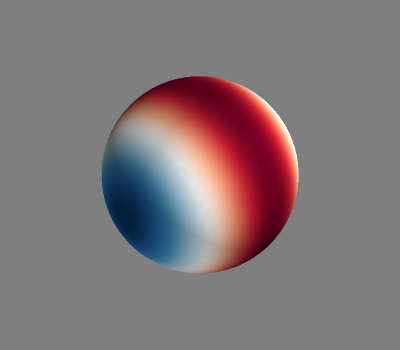

Note
Click here to download the full example code
Spherical harmonics test, remove?¶
Should this be left as an example?
 Out:
Positions of evaluation points
[[ 0. 0. -1. ]
[ 0. 0. 1. ]
[ 0. -1. 0. ]
...
[-0.47091704 0.61924158 -0.62831282]
[-0.94074222 0. -0.33912251]
[-0.94074222 0. 0.33912251]]
nans in sph component 0 : 0
nans in sph component 1 : 0
nans in sph component 2 : 0
nans in sph component 3 : 0
nans in sph component 4 : 0
nans in sph component 5 : 0
nans in sph component 6 : 0
nans in sph component 7 : 0
#
#import sys
#path = '/m/home/home8/80/makinea1/unix/pythonstuff/bfieldtools'
#if path not in sys.path:
# sys.path.insert(0, path)
import numpy as np
import matplotlib.pyplot as plt
from mayavi import mlab
from bfieldtools.sphtools import basis_fields, ylm, derxlm, sinxlm
from trimesh.creation import icosphere
mesh = icosphere(4, 1)
print('Positions of evaluation points')
print(mesh.vertices)
theta=np.linspace(1e-6, np.pi*0.999)
sp = sinxlm(1,-1, theta)
plt.plot(sp)
aa, bb= basis_fields(mesh.vertices, 2)
for ii in range(aa.shape[1]):
print('nans in sph component ', ii, ': ', np.isnan(aa[:,ii,:]).sum())
aa[np.isnan(aa)] = 100
# Plot the first component
mlab.triangular_mesh(*mesh.vertices.T, mesh.faces,
scalars=np.linalg.norm(aa[:,0,:], axis=0), colormap='RdBu')
Total running time of the script: ( 0 minutes 7.691 seconds)
Estimated memory usage: 129 MB